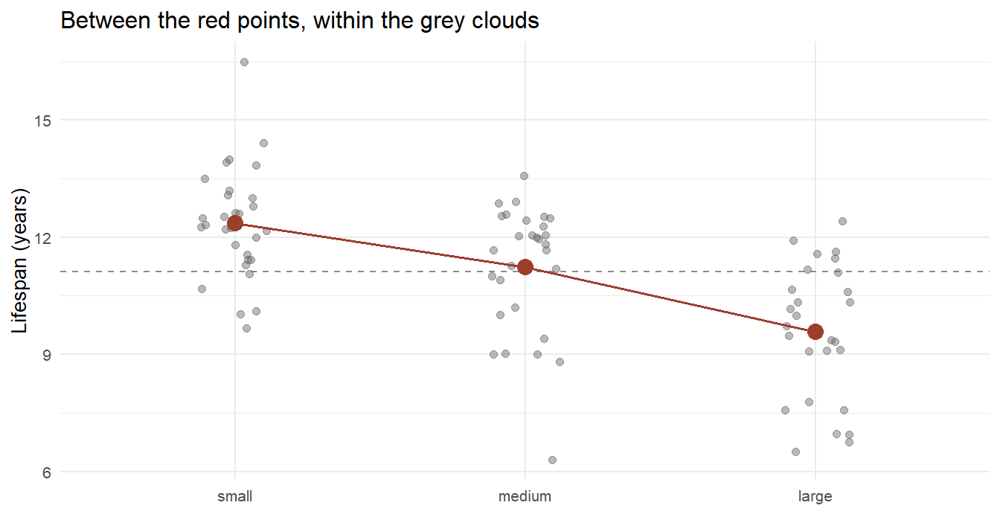

5.3 Partitioning Variation
Analysis of variance and analysis of covariance
The t-test compares two means. But the interesting questions rarely stop at two. Do the seven kennel-club groups from the stories chapter differ in quality? Do students in seven different terms arrive with different R skills? Do small, medium and large dogs live differently long? The tool for many means at once was invented in a place that smelled of manure, by the same man who gave the variance its name in section 5.1.
5.3.1 Muck and mathematics
In 1919, Ronald Fisher turned down a safe job at the most prestigious statistical laboratory in Britain and went instead to Rothamsted Experimental Station, an agricultural research farm north of London, to be its first statistician.88 What Rothamsted had was data nobody could analyse: the Broadbalk field had been growing winter wheat continuously since 1843, its strips treated with different fertilisers — farmyard manure here, mineral nitrogen there, nothing at all on the control strip — with the harvest of every strip recorded for seventy-five years.89
The question sounds simple: does the fertiliser matter? But every strip's yield bounced around from year to year with the weather, the weeds, the drainage. The differences between treatments were tangled up with differences that had nothing to do with treatments. Fisher's move, published in 1921 in the first of his Studies in Crop Variation papers and systematised in his 1925 book, was not to compare the means directly but to take the total variation apart — so much attributable to treatment, so much to rainfall, so much left over — and then ask whether the treatment's share was too large to be luck.90 He called the method the analysis of variance; everyone since has called it ANOVA.
Notice the same pattern as with the t-test: the method was forced into existence by messy, expensive, limited real data — brewery barley there, muddy wheat strips here — not by abstract mathematics. Fisher's 1918 paper had already coined the word variance; Rothamsted is where variance stopped being a description and became an argument.
5.3.2 The idea: total = between + within
Here is the whole method in nine numbers. Three groups, three observations each:
| Group | Values | Group mean |
|---|---|---|
| A | 1, 2, 3 | 2 |
| B | 2, 3, 4 | 3 |
| C | 6, 7, 8 | 7 |
The grand mean of all nine values is . Now take any single observation — say the 8 in group C — and split its distance from the grand mean into two steps:
\[\underbrace{(8 - 4)}_{\text{total}} = \underbrace{(7 - 4)}_{\text{its group is high}} + \underbrace{(8 - 7)}_{\text{it is high for its group}}\]
Do this for all nine observations, square, and sum — exactly as the variance formula taught us — and the identity survives the squaring:
\[SS_{\text{total}} = SS_{\text{between}} + SS_{\text{within}}\]
For our nine numbers: the between-groups sum of squares is \(3\left[(2-4)^2 + (3-4)^2 + (7-4)^2\right] = 3(4 + 1 + 9) = 42\), and the within-groups sum is \(2 + 2 + 2 = 6\) (each group contributes deviations of −1, 0, +1). The group labels account for \(42/48\) — some 88% — of everything that varies.
Is 88% a lot? That depends on how many groups and how many observations, which is what the F-statistic settles. Each sum of squares becomes a mean square by dividing by its degrees of freedom — between: \(42/2 = 21\); within: \(6/6 = 1\) — and their ratio is:
\[F = \frac{\text{mean square between}}{\text{mean square within}} = \frac{21}{1} = 21\]
Definition
The analysis of variance (ANOVA) splits the total variation of an outcome into a part between group means and a part within groups. The F-statistic is the ratio of the two (per degree of freedom). If the groups' means were all equal, F would hover around 1; the further above 1, the less plausible "all means are equal" becomes.
toy <- data.frame(y = c(1, 2, 3, 2, 3, 4, 6, 7, 8),
grp = rep(c("A", "B", "C"), each = 3))
summary(aov(y ~ grp, data = toy))
#> Df Sum Sq Mean Sq F value Pr(>F)
#> grp 2 42 21 21 0.00195 **
#> Residuals 6 6 1
#> ---
#> Signif. codes: 0 '***' 0.001 '**' 0.01 '*' 0.05 '.' 0.1 ' ' 1R agrees with our hand calculation on every entry: sums of squares 42 and 6, mean squares 21 and 1, F = 21, and a p-value of 0.002. Note that F answers only whether the group labels matter at all — one question about all groups jointly, not which particular groups differ. That is a feature, and the next subsection shows why.
5.3.3 Why not just run many t-tests?
Seven kennel-club groups make \(\binom{7}{2} = 21\) possible pairwise t-tests. Suppose the groups truly do not differ. Each test still has a 5% chance of a false alarm, and the chance that at least one of 21 fires is
\[1 - 0.95^{21} \approx 0.66.\]
Two out of three such analyses would "find" a difference in perfectly homogeneous data — and the honest ones would report exactly the pair that fired. This is the multiple comparisons problem, and it is not a technicality: it is the statistical engine behind an ocean of false findings. ANOVA's single F-test asks one question of the whole family first; only if the family-level answer is "something is going on" do we go looking for where.
A lady tasting tea
The multiple comparisons problem has a twin — how easily one comparison convinces us — and its most famous illustration happened at Rothamsted, at tea time. A colleague of Fisher's, the algae specialist Muriel Bristol, declined a cup of tea because the milk had been poured in first; she claimed she could taste the difference. Fisher's response was to design an experiment on the spot: eight cups, four milk-first and four tea-first, presented in random order.91
Why eight? With eight cups there are 70 ways to pick which four were milk-first, so guessing gets all of them right one time in 70 — below the 5% bar. With six cups, a perfect score can be guessed one time in 20, right on the boundary. Fisher had computed, before a single cup was poured, how much evidence the design could possibly produce.
By the account of those present, Dr Bristol identified all eight cups correctly. The episode opens Fisher's The Design of Experiments (1935) and gave its name to the standard history of twentieth-century statistics. It resurfaces in this book when the Identify chapter (9) takes up randomisation — the other, and greater, thing Fisher built at Rothamsted.
5.3.4 Do big dogs die younger, part two
The stories chapter answered this question with a scatterplot of shoulder height against lifespan. But the dog data also contains a coarser, more human variable: each breed labelled simply small, medium or large. Coarse categories are how people actually talk — nobody asks a breeder for a dog of 46 centimetres — so let us run the comparison the way a buyer would frame it.
dogs_raw <- read.csv("data/Dogs/best_in_show.csv",
check.names = FALSE, stringsAsFactors = FALSE)
num <- function(v) as.numeric(gsub("[$,%]", "", v))
dogs <- data.frame(Breed = dogs_raw[[1]], Group = dogs_raw[[3]],
Score = num(dogs_raw[[5]]), Popularity = num(dogs_raw[[6]]),
Life = num(dogs_raw[[13]]), Height = num(dogs_raw[[35]]),
Size = dogs_raw[[32]])[-1, ] %>%
filter(!is.na(Score), !is.na(Popularity), !is.na(Life),
Size %in% c("small", "medium", "large")) %>%
mutate(Size = factor(Size, levels = c("small", "medium", "large")))
Figure 5.8: Lifespan of 87 breeds by size category. Red points mark the group means; the dashed line is the grand mean. ANOVA measures whether the red points' spread is large relative to the grey points' spread.
Small breeds live 12.4 years on average, medium 11.2, large 9.6. The ANOVA:
summary(aov(Life ~ Size, data = dogs))
#> Df Sum Sq Mean Sq F value Pr(>F)
#> Size 2 111.9 55.96 22.25 1.76e-08 ***
#> Residuals 84 211.2 2.51
#> ---
#> Signif. codes: 0 '***' 0.001 '**' 0.01 '*' 0.05 '.' 0.1 ' ' 1F = 22.3 with a p-value in the hundred-millionths: the size labels matter, beyond any reasonable doubt. And the sums of squares give us something the p-value cannot — a measure of how much they matter. The size category accounts for \(111.9 / (111.9 + 211.2) = 0.35\) of the total variation in lifespan.
Definition
Eta squared (\(\eta^2\)) is the share of total variation attributable to the grouping:
\[\eta^2 = \frac{SS_{\text{between}}}{SS_{\text{total}}}\]
It is the ANOVA sibling of \(R^2\), and like \(R^2\) it answers the size question that the F-test's p-value deliberately does not.
So size explains 35% of lifespan variation — and leaves 65% within the categories: some large breeds outlive some small ones. Both halves of that sentence are findings.
Now, which sizes differ from which? This is where the multiple comparisons problem returns, and where John Tukey's honestly significant difference enters: pairwise comparisons with the family-wise error held at 5% across the whole set.92
TukeyHSD(aov(Life ~ Size, data = dogs))
#> Tukey multiple comparisons of means
#> 95% family-wise confidence level
#>
#> Fit: aov(formula = Life ~ Size, data = dogs)
#>
#> $Size
#> diff lwr upr p adj
#> medium-small -1.129555 -2.107047 -0.1520629 0.0193878
#> large-small -2.778303 -3.774325 -1.7822818 0.0000000
#> large-medium -1.648748 -2.660632 -0.6368646 0.0005856All three gaps survive the correction: medium−small (−1.1 years), large−medium (−1.6), large−small (−2.8). The word honestly in the name is doing real work — these intervals are wider than three naive t-tests would draw, because they have paid, in advance, for the fact that we went looking three times.
Your Turn
The same 87 breeds carry the kennel-club Group label from the stories chapter. An ANOVA of data score on the seven groups gives F = 5.4, p = 0.0001, \(\eta^2 = 0.29\): sporting breeds score highest (2.98), working breeds lowest (2.06).
How many pairwise comparisons does Tukey's procedure control for here?
And our course data: R background across the seven terms gives F = 2.8, p = 0.012. Before interpreting it, what is awkward about treating Term as seven unordered categories?
5.3.5 ANOVA is also a regression
Section 5.2 ended by unmasking the t-test as a regression with one binary variable. ANOVA falls to the same unmasking:
lm(Life ~ Size, data = dogs) %>% summary() %>% coef() %>% round(3)
#> Estimate Std. Error t value Pr(>|t|)
#> (Intercept) 12.356 0.285 43.383 0.000
#> Sizemedium -1.130 0.410 -2.757 0.007
#> Sizelarge -2.778 0.417 -6.655 0.000The intercept, 12.36, is the small-breed mean. The two coefficients, −1.13 and −2.78, are exactly the medium−small and large−small gaps from the Tukey table. And running anova() on this regression reproduces the F of 22.3. One category was consumed as the baseline; the other two became dummy variables — a preview of how the model chapter (6) handles every categorical variable it meets.
This is worth internalising as a general truth: t-test, ANOVA and regression are not three methods. They are one method — comparing conditional means — at three levels of generality. Which brings us to the natural next question: what happens when we compare group means while holding something else constant?
5.3.6 ANCOVA: the control variable enters
The size categories explain 35% of lifespan variation. But the stories chapter showed that height — the continuous measurement underneath the categories — predicts lifespan too. What happens if we put both into the comparison? Adding a continuous covariate to an ANOVA has its own name, analysis of covariance (ANCOVA), and the result here is worth staring at:
dogs_h <- dogs %>% filter(!is.na(Height)) # 76 of 87 breeds have height
lm(Life ~ Size + Height, data = dogs_h) %>% summary() %>% coef() %>% round(3)
#> Estimate Std. Error t value Pr(>|t|)
#> (Intercept) 15.325 0.829 18.491 0.000
#> Sizemedium 1.437 0.725 1.983 0.051
#> Sizelarge 1.105 1.103 1.002 0.320
#> Height -0.104 0.027 -3.785 0.000Compare the coefficients with and without the covariate:
| medium − small | large − small | Height (per cm) | |
|---|---|---|---|
| ANOVA (categories only) | −0.86* | −2.79*** | — |
| ANCOVA (+ height) | +1.44 | +1.10 | −0.10*** |
(On the 76 breeds with height data; * p < 0.05, *** p < 0.001.)
The category effects have not merely shrunk — they have vanished, flipping sign and losing all significance, while each centimetre of height costs about 0.10 years. Once the analysis knows a breed's actual height, being labelled "large" carries no additional information about lifespan.
And of course it doesn't. The size categories were never a separate biological fact — they are coarsened height, three bins slapped onto a continuous measurement. The ANOVA result was real but it was a shadow: the categories predicted lifespan only because they proxied for the ruler. The ANCOVA lets the ruler speak, and the shadow disappears.
This example is gentle, because here we know the covariate is the category's parent. In real social science it is rarely so clear, and the same mechanics cut deep. A raw comparison shows a gender wage gap; add controls for occupation and the gap shrinks — has the gap been explained away, or have we just controlled away the very channel through which the discrimination operates, since occupations are themselves sorted by gender?
The arithmetic of ANCOVA cannot answer that. Which variables belong in the comparison is a causal question, not a statistical one — it depends on what causes what, not on what correlates with what. That question gets the tools it deserves in the Structure and Identify chapters (9). Until then, adopt the habit: every time you read "controlling for X", ask what the author believes X is to the relationship — a confounder to be removed, or a mechanism that was just quietly deleted.
Your Turn
Master students in our course report 1.95 more semesters of total study than Bachelor students (t = 4.8) — and the previous section's Your Turn established the boring reason: a Master student has, by definition, already finished a degree.
Age might play the same "ruler behind the categories" role that height played for the dogs: Masters are 2.3 years older. Run the ANCOVA in your head first — if the semester gap were entirely an age effect, what should happen to the Academic.level coefficient once Age is controlled?
Now the actual result: lm(Total.Semesters ~ Academic.level + Age) leaves the Master gap at 1.89 semesters (t = 4.1) while age contributes nothing (t = 0.4). So, unlike the dogs, this category difference is
5.3.7 Beyond the mean
Everything in this section and the last compared means. It is fair to stop and ask why the mean deserves such a monopoly — the question is older than it looks, and the answer is not "because the mean is best".
The mean's monopoly has honest foundations. It is the quantity that sums: total tax revenue is the mean payment times the count, total years of schooling is the mean times the cohort, so policy that moves totals is policy about means. Its sampling behaviour is the best-understood in all of statistics — the central limit theorem makes averages of almost anything approximately normal, which is what let Gosset and Fisher build exact machinery around them. And, as we have now seen twice, comparing means is regression, so the entire modelling arsenal of the coming chapters comes free.
But two variables can share a mean and describe different worlds, and social science has cases where the difference is the entire point. Two countries with identical mean income, one egalitarian and one polarised. Two teaching methods with identical mean scores, one reliable and one that produces stars and casualties. When the question is inequality, risk or polarisation, the mean is not a summary — it is a blindfold. Three tools take it off; each answers a different question, and each is a one-liner in R.
Compare ranks, not values — wilcox.test(). Frank Wilcoxon, an industrial chemist (industry again: beer, then fertiliser, now pesticides), replaced the values with their ranks in 1945.93 The test asks whether one group tends to sit above the other, and outliers lose their leverage: our 278-year-old student would have wrecked a mean but merely occupies rank 233 of 233. The price is that "tends to sit above" is vaguer than "differs by 1.1 years" — robustness is bought with precision.
Compare entire distributions — ks.test(). The Kolmogorov–Smirnov statistic is beautifully blunt: draw both cumulative distributions and report the widest vertical gap between them. Any difference — in centre, spread, or shape — widens the gap, so it is the honest answer to "are these two groups distributed differently, in any way at all?" The price of catching everything is that a rejection alone does not say what differs; the picture has to accompany the test.
Compare the spread itself — var.test(), or Levene's more robust cousin. Sometimes the standard deviation is the substance. Whether a reform raised average performance is one question; whether it widened the gap between the strongest and weakest students is another, and parents may care more about the second.
coursedata <- read.csv("data/Course/GF_AllTime.csv", sep = ";") %>% filter(Age < 100)
ks.test(Age ~ Academic.level, data = coursedata)$p.value # distributions differ?
#> [1] 8.315482e-08
var.test(Age ~ Academic.level, data = coursedata)$p.value # spreads differ?
#> [1] 0.2960909For age by academic level: the t-test (p ≈ 10⁻⁶), the rank test and the KS test all agree the distributions differ, while the variance test does not (p = 0.30) — Bachelor and Master ages differ in location, not in spread. Four tests, and only together do they say something precise: the whole Master age distribution sits about two years to the right of the Bachelor one, with a similar shape.
"Do the groups differ?" is not one question. In means — t-test, ANOVA. In means, net of a covariate — ANCOVA. In tendency, robust to outliers — rank tests. In spread — variance tests. In distribution overall — Kolmogorov–Smirnov. For categorical outcomes, in proportions — the chi-square logic that returns with the logistic models of the model chapter.
The mean is the default because it sums, because it is tractable, and because it leads directly to regression — not because it is always the answer. The craft is matching the test to the question — and the fastest way to find the question is the one this book keeps returning to: draw the two distributions first. Fisher partitioned wheat fields; the least we can do is look at the clouds before comparing their centres.
Readings
- Salsburg, D. (2001). The Lady Tasting Tea: How Statistics Revolutionized Science in the Twentieth Century. W. H. Freeman. The tea experiment, Gosset, Fisher and Rothamsted, told as history.
- Ziliak, S. T. (2008). Guinnessometrics: The Economic Foundation of "Student's" t. Journal of Economic Perspectives, 22(4), 199–216.
Fisher was offered the chief statistician post under Karl Pearson at the Galton Laboratory and chose the farm instead; he was appointed at Rothamsted by its director E. John Russell in 1919. See J. F. Box, R. A. Fisher: The Life of a Scientist, Wiley, 1978, and https://en.wikipedia.org/wiki/Ronald_Fisher.↩︎
The Broadbalk winter wheat experiment, sown continuously since autumn 1843, is the world's oldest running agricultural experiment: Rothamsted electronic archive, http://www.era.rothamsted.ac.uk/experiment/rbk1.↩︎
Fisher, R. A. (1921). Studies in Crop Variation. I. An examination of the yield of dressed grain from Broadbalk, Journal of Agricultural Science 11(2), 107–135. The method reached textbook form in Statistical Methods for Research Workers, Oliver & Boyd, 1925 — the same book that spread the p < 0.05 convention.↩︎
Fisher, R. A., The Design of Experiments, Oliver & Boyd, 1935, chapter II. The taster was Dr Muriel Bristol; the account of her perfect score comes from H. Fairfield Smith via D. Salsburg. See https://en.wikipedia.org/wiki/Lady_tasting_tea.↩︎
Tukey, J. W. (1949). Comparing Individual Means in the Analysis of Variance. Biometrics 5(2), 99–114, https://doi.org/10.2307/3001913.↩︎
Wilcoxon, F. (1945). Individual Comparisons by Ranking Methods. Biometrics Bulletin 1(6), 80–83, https://doi.org/10.2307/3001968. The equivalent two-sample formulation is Mann, H. B., and Whitney, D. R. (1947), Annals of Mathematical Statistics 18(1), 50–60.↩︎